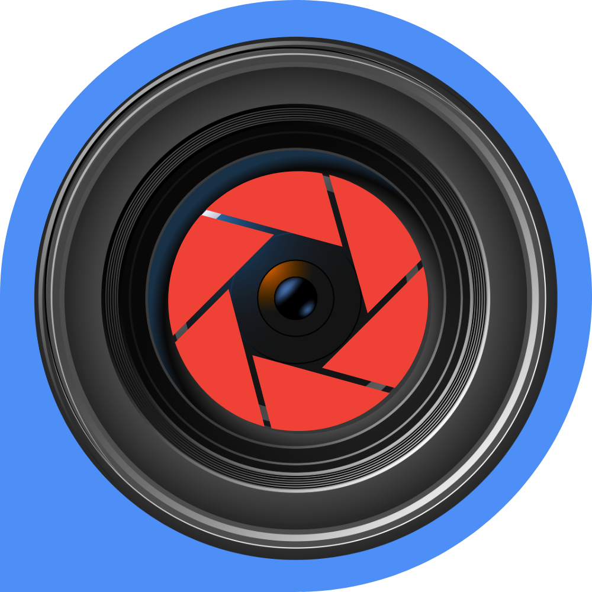
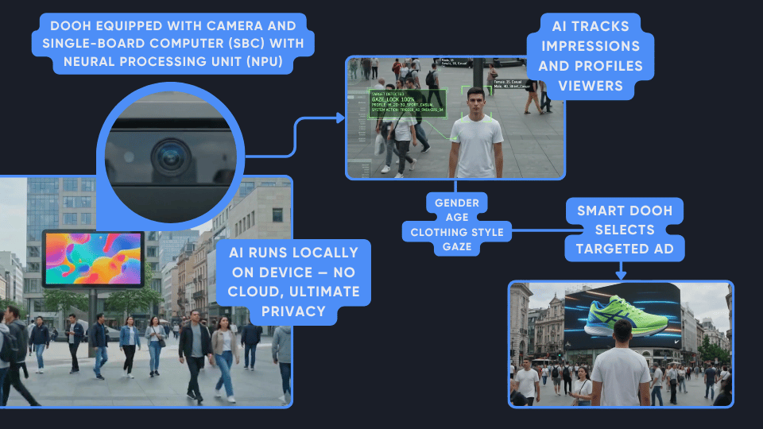

AdEyeBrands pay for outdoor reach they cannot prove. With AdEye, an impression means someone actually looked — and once that eye contact is there, age, gender and style decide which creative from your pool goes on screen.

Concept demo
AI-generated walkthrough of a passer-by stopping at a city-square screen — gaze detected, profile built, targeted creative played. All on the device.
How it works
A camera built into the DOOH screen watches the footpath. Everything below happens on the on-board computer — in real time.
Full privacy
This is not a cloud service watching the street. The entire pipeline runs on a local computer built into the DOOH unit. That is what makes full privacy and anonymity possible.
✕ No video to the cloud · ✕ No images stored on device · ✕ No face database
Status
This page presents the product concept. The technology behind it exists as a lab proof of concept — person detection, gaze recognition, audience profiling, and on-screen inference on standard billboard hardware. The next step is field testing on a live screen.